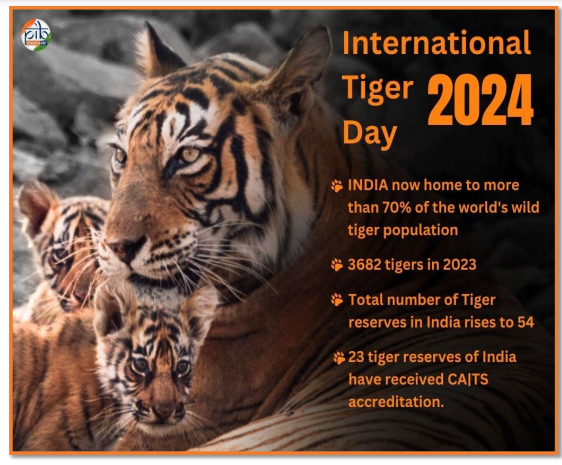
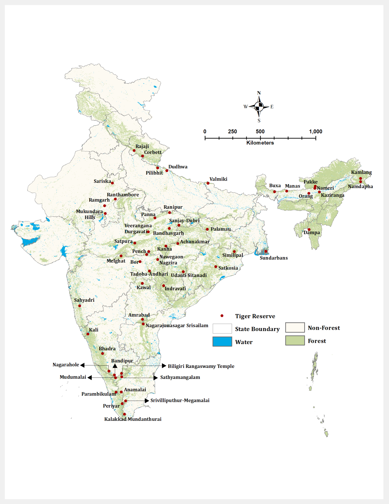
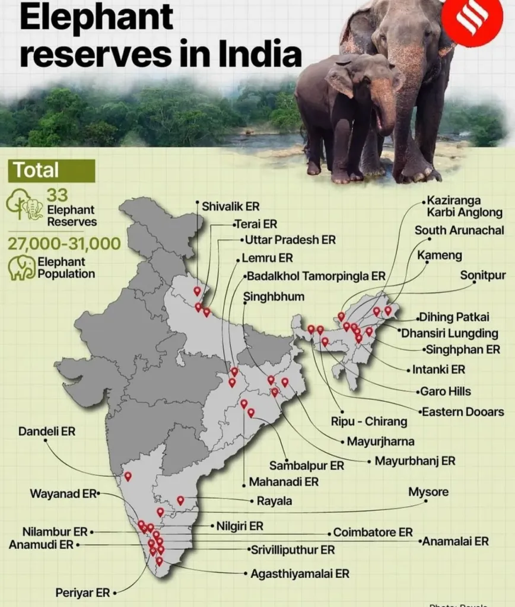
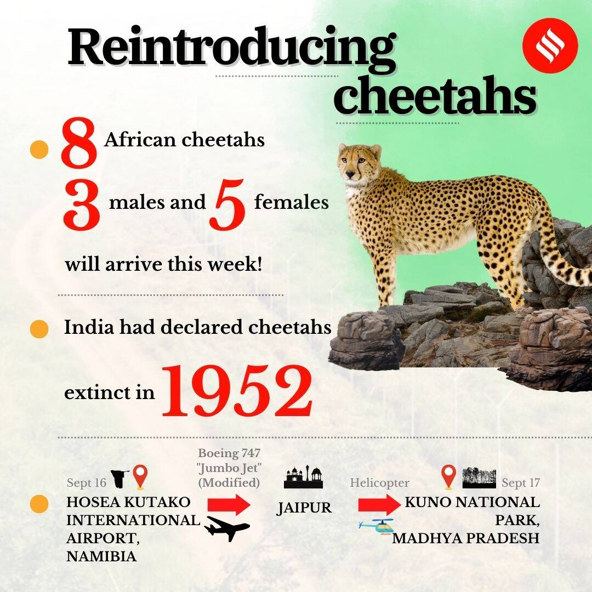

28 Wildlife Conservation Efforts And Endangered Species
Wildlife Conservation Efforts and
Endangered Species
To ensure the sustainable conservation of wildlife and their habitats, the Government of India has implemented several special schemes. Notable among these are Project Tiger (1973) and Project Elephant (1992). In addition, initiatives like the Crocodile Breeding Project, Project Hangul, and programs for the conservation of the Himalayan Musk Deer have also been launched to protect these species.
Project Tiger
The Government of India has taken a pioneering initiative for conserving its national animal, the tiger, by launching Project Tiger in 1973. The tiger reserves are based on a core/buffer strategy, where the core areas are designated as national parks or sanctuaries, while the buffer areas are managed as multiple-use zones of forest and non-forest land. Project Tiger focuses on an exclusive tiger agenda in the core areas of tiger reserves, coupled with an inclusive people-oriented agenda in the buffer zones. It is an ongoing Centrally Sponsored Scheme under the Ministry of Environment, Forests, and Climate Change, providing central assistance to tiger States for conservation efforts. The National Tiger Conservation Authority (NTCA), a statutory body under the Ministry, has a supervisory and coordination role, as outlined in the Wildlife (Protection) Act, 1972.


Project Elephant
Project Elephant is a Centrally Sponsored Scheme launched in February 1992 to support the protection and management of elephants in states with free-ranging elephant populations. The scheme ensures the preservation of elephant corridors and habitats to secure the survival of wild elephant populations. In 2010, the Government of India declared elephants as a national heritage animal based on the recommendations of the National Board for Wildlife's Standing Committee. Additionally, a proposed National Elephant Conservation Authority (NECA), modeled after the NTCA, aims to strengthen conservation efforts by amending the Wildlife (Protection) Act, of 1972.
Recent Updates on Elephant Population (2024):
Tamil Nadu: Population increased to 3,063 (up from 2,971 in 2023), with the Sathyamangalam Forest Division recording the highest number (372), followed by Coimbatore Forest Division (336). Odisha: Population rose to 2,098 (up from 1,976 in 2017). Kerala: Population estimated at 1,793, reflecting a 7% decline compared to the previous year, alongside a significant reduction in juvenile elephants.

Reintroducing Cheetahs

Scientific Name: Acinonyx jubatus Habitat: Cheetahs inhabit a variety of landscapes, including savannas, grasslands, and semi-arid regions across Africa. Historically, they also roamed parts of Asia and India. Extinction in India: Cheetahs were declared extinct in India in 1952 due to habitat loss and hunting. International Status (IUCN): The IUCN Red List classifies cheetahs as Vulnerable, with their population declining due to habitat fragmentation, human-wildlife conflict, and illegal trafficking. Current Range: Most cheetahs are found in sub-Saharan Africa, particularly in Namibia, Botswana, and parts of South Africa. A small population of the critically endangered Asiatic cheetah survives in Iran. Speed: Cheetahs are the fastest land animals, capable of reaching speeds up to 60-70 miles per hour (97-113 km/h) in short bursts. Recent Reintroduction in India: In 2022, India launched a cheetah reintroduction project, importing individuals from Namibia and South Africa into protected areas like Kuno National Park in Madhya Pradesh.
Few more wildlife conservation efforts:
| Year | Conservation Efofrt | Species/ Animal | Key Focus & Details |
|---|---|---|---|
| 2005 | Indian Rhino Vision 2020 (IRV2020) | Greater One-Horned Rhino (Rhinoceros unicornis) | Goal: Achieve a population of 3,000 rhinos in seven protected areas in Assam. Key Areas: Kaziranga, Pobitora, Orang NP, Manas NP, Laokhowa, Burachapori, Dibru Saikhowa. Key Strategy: Wild-to-wild translocations to spread rhinos across parks. |
| 1970s | Project Hangul | Kashmir Red Stag (Cervus hanglu) | Goal: Protect Hangul (Kashmir Red Stag) from extinction. Collaborators: Jammu & Kashmir government, IUCN, WWF. Key Focus: Habitat protection in Dachigam NP & Kishtwar forests. |
|---|---|---|---|
| 1975 | Crocodile Conservation Initiative | Crocodiles (Gharial, Mugger, Saltwater Crocodile) | Goal: Protect crocodiles from poaching and habitat loss. Key Species: Gharial, Mugger, Saltwater Crocodile. Key Areas: National Chambal Sanctuary, Katerniaghat. Techniques: Captive breeding, Rehabilitation, Release. |
| 1981 | The Manipur Brow-antlered Deer Project | Manipur Brow-antlered Deer (Cervus eldi eldi) | Goal: Conserve the Brow-antlered Deer in Manipur, Loktak Lake. Key Focus: Protecting the endangered species from habitat degradation & poaching. Key Areas: 35 km² sanctuary. |
| 1981 | Project Himalayan Musk Deer | Musk Deer (Moschus chrysogaster) | Goal: Protect the Musk Deer from poaching and habitat loss. Key Focus: Captive breeding and habitat restoration in Kedarnath Sanctuary. Collaborators: IUCN, Govt. of India, Uttarakhand. |
| 1976 | Lesser Cats Project | Smaller Wild Cats (Felis species) | Goal: Protect four species of small cats in Sikkim and West Bengal. Species: Felis bengalensis, Felis marmorta, Felis lemruinki, Felis viverrine. |
| 1972 | Gir Lion Sanctuary Project | Asiatic Lion (Panthera leo persica) | Goal: Protect the Asiatic Lion in Gir Forest, Gujarat. Key Focus: Conservation rules, habitat protection, prey species management, and anti-poaching. |
| 1999 | Sea Turtle Project | Olive Ridley Sea Turtle (Lepidochelys olivacea) | Goal: Protect the Olive Ridley Turtle along India's eastern coast (mainly Orissa). Key Focus: Nesting site protection, Satellite telemetry, Turtle Exclusion Devices (TED), public awareness. |
| 2000s | Ganges Dolphin Conservation | Ganges River Dolphin (Platanista gangetica) | Goal: Conserve the Ganges River Dolphin (National Aquatic Animal). Key Threats: Pollution, entanglement, dam construction. Status: IUCN Red List - Endangered, CITES Appendix I. Key Areas: Ganges-Brahmaputra-Meghna river systems. |
| 2013 | Project Great Indian Bustard | Great Indian Bustard (Ardeotis nigriceps) | Goal: Conserve the critically endangered Great Indian Bustard (locally called Godawan) by protecting its habitat and remaining population. Key Areas: Rajasthan, Gujarat. Launched by: Honorable Chief Minister, 5th June 2013. |
Status of Important Species in India
| Common Name | Scientifci Name | Location | IUCN Status | India Status |
|---|---|---|---|---|
| Bengal Tiger | Panthera tigris tigris | National parks across India (Sundarbans, Ranthambore, etc.) | Endangered | Endangered |
| Asian Elephant | Elephas maximus | North, Northeast, and Southern India (Assam, Kerala, Karnataka) | Endangered | Endangered |
| Indian One-horned Rhino | Rhinoceros unicornis | Assam, West Bengal, Uttar Pradesh | Vulnerable | Vulnerable |
| Ganges River Dolphin | Platanista gangetica | Ganges, Brahmaputra, and Meghna river systems | Endangered | Endangered |
| Snow Leopard | Panthera uncia | Himalayan regions (Jammu & Kashmir, Ladakh, Himachal Pradesh) | Vulnerable | Endangered |
| Red Panda | Ailurus fulgens | Eastern Himalayas (Sikkim, Arunachal Pradesh, West Bengal) | Endangered | Endangered |
| Sarus Crane | Antigone antigone | Northern India (Uttar Pradesh, Rajasthan, Gujarat, Assam) | Vulnerable | Vulnerable |
| Common Leopard | Panthera pardus fusca | Across India (Himalayas, Western Ghats, central forests) | Vulnerable | Least Concern |
| Great Indian Bustard | Ardeotis nigriceps | Rajasthan, Gujarat, Maharashtra, Karnataka | Critically Endangered | Critically Endangered |
| Himalayan Quail (Extinct) | Ophrysia superciliosa | Western Himalayas (Uttarakhand) | Critically Endangered (Possibly Extinct) | Extinct |
| House Sparrow | Passer domesticus | Across India (urban and rural areas) | Least Concern | Least Concern |
|---|---|---|---|---|
| Nilgiri Tahr | Nilgiritragus hylocrius | Western Ghats (Tamil Nadu, Kerala) | Endangered | Endangered |
| Gharial | Gavialis gangeticus | Northern Indian rivers (Ganges, Chambal) | Critically Endangered | Critically Endangered |
| Asiatic Lion | Panthera leo persica | Gir Forest, Gujarat | Endangered | Endangered |
| Black-necked Crane | Grus nigricollis | Ladakh, Arunachal Pradesh | Near Threatened | Vulnerable |
| Smooth-coate d Otter | Lutrogale perspicillata | River systems across India | Vulnerable | Endangered |
| Golden Mahseer | Tor putitora | Himalayan rivers (Jammu & Kashmir, Himachal Pradesh) | Endangered | Endangered |
| Indian Pangolin | Manis crassicaudata | Across India (forests and plains) | Endangered | Endangered |
| Brow-antlered Deer | Rucervus eldii | Keibul Lamjao National Park, Manipur | Endangered | Endangered |
| Indian Cheetah (Extinct) | Acinonyx jubatus venaticus | Historically found in India (extinct since the 1940s) | Extinct | Extinct |
| Pink-headed Duck (Extinct) | Rhodonessa caryophyllace a | Historically found in India (Eastern wetlands) | Critically Endangered (Possibly Extinct) | Extinct |
| Sumatran Rhinoceros (Extinct) | Dicerorhinus sumatrensis | Historically found in Northeast India | Critically Endangered | Extinct |